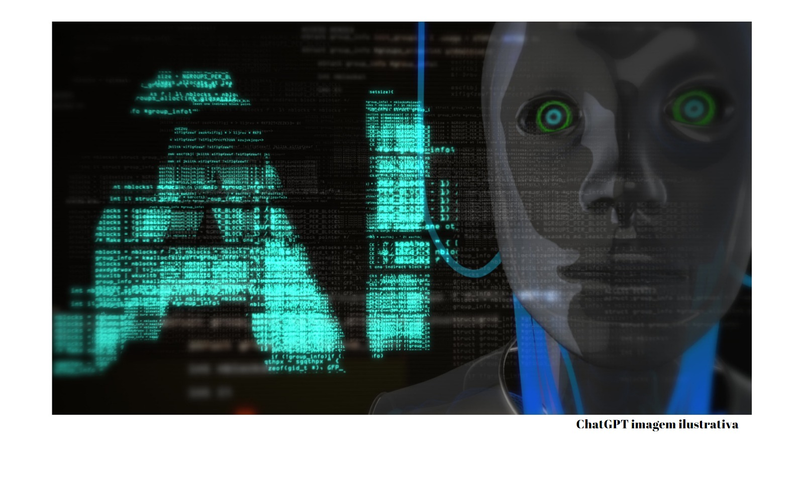

SE LIGA CURIOSO
HOME
SOBRE
ARTIGOS
MEUS OLHOS CURIOSOS
menu
HOME
SOBRE
ARTIGOS
MEUS OLHOS CURIOSOS

Três especialistas em IA sobre como o acesso à tecnologia estilo ChatGPT está prestes a mudar nosso mundo
O rover Curiosity da NASA encontra pistas surpreendentes sobre o passado aquático de Marte
O buraco negro central de Messier 87, uma enorme galáxia no aglomerado de Virgem. Colaboração do Event Horizon Telescope/ESO , CC BY
Deuses na máquina? A ascensão da inteligência artificial pode resultar em novas religiões